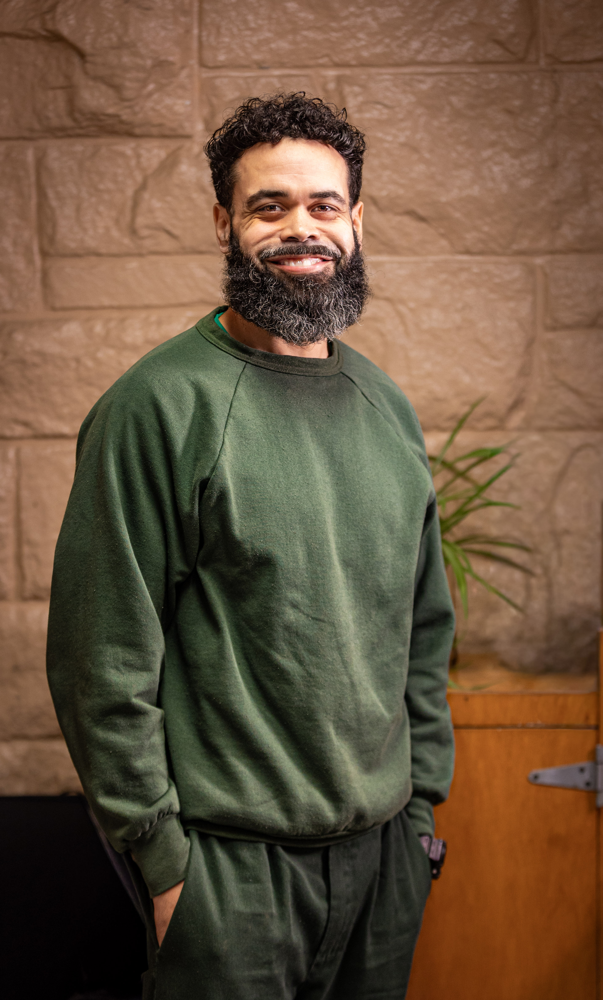
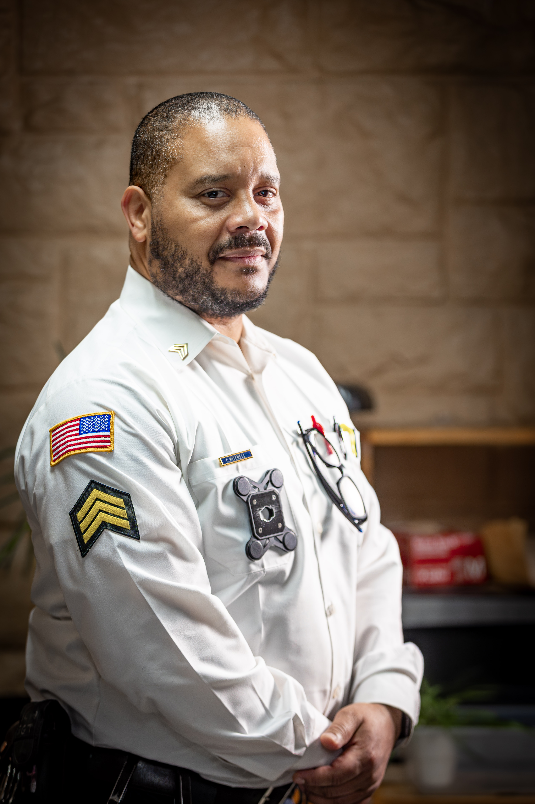
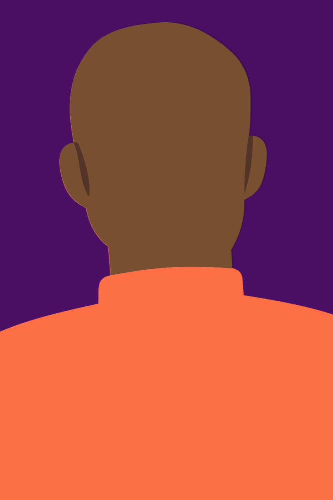
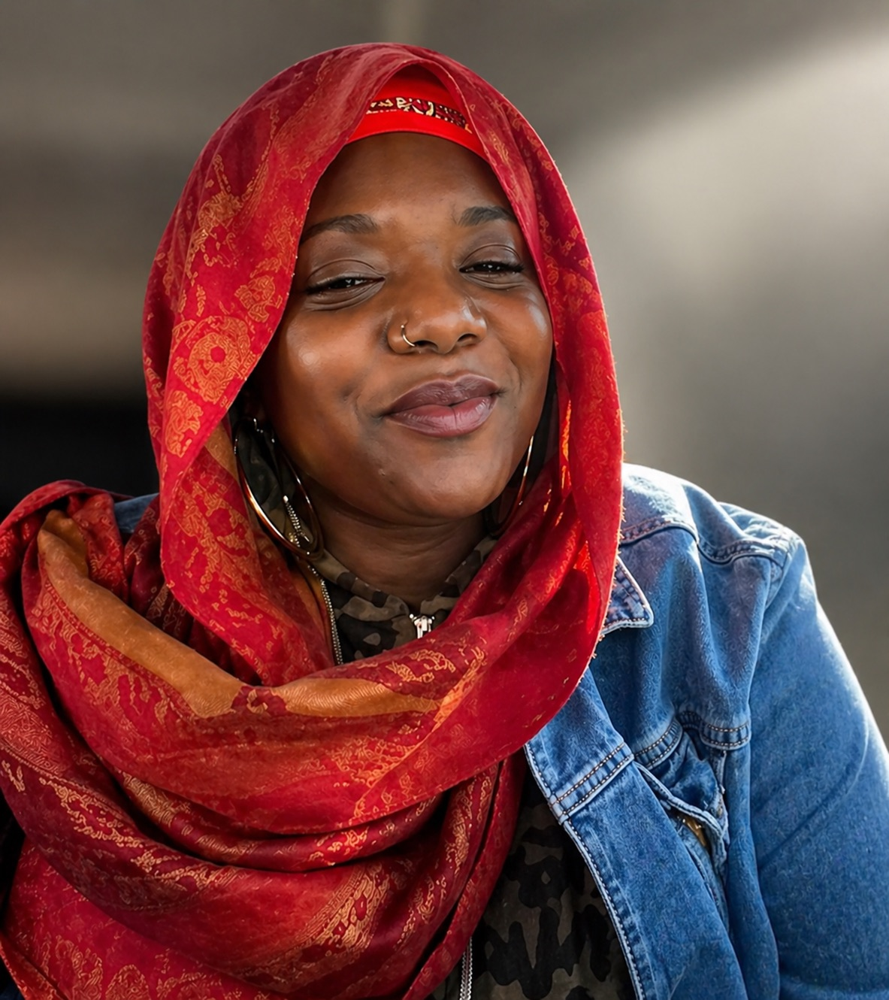
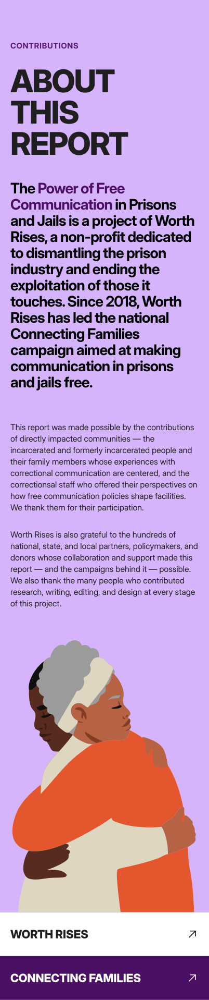
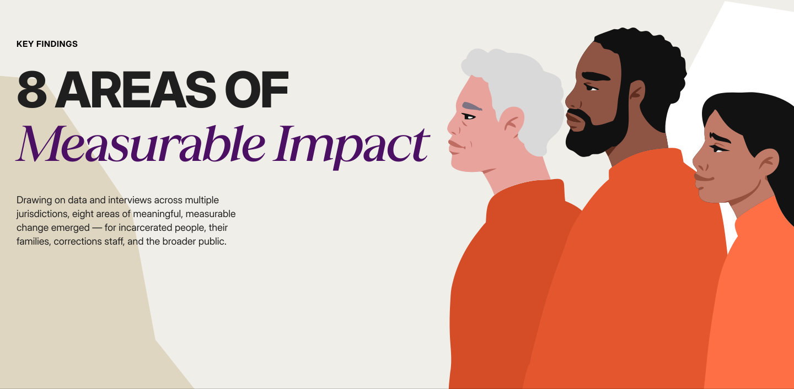
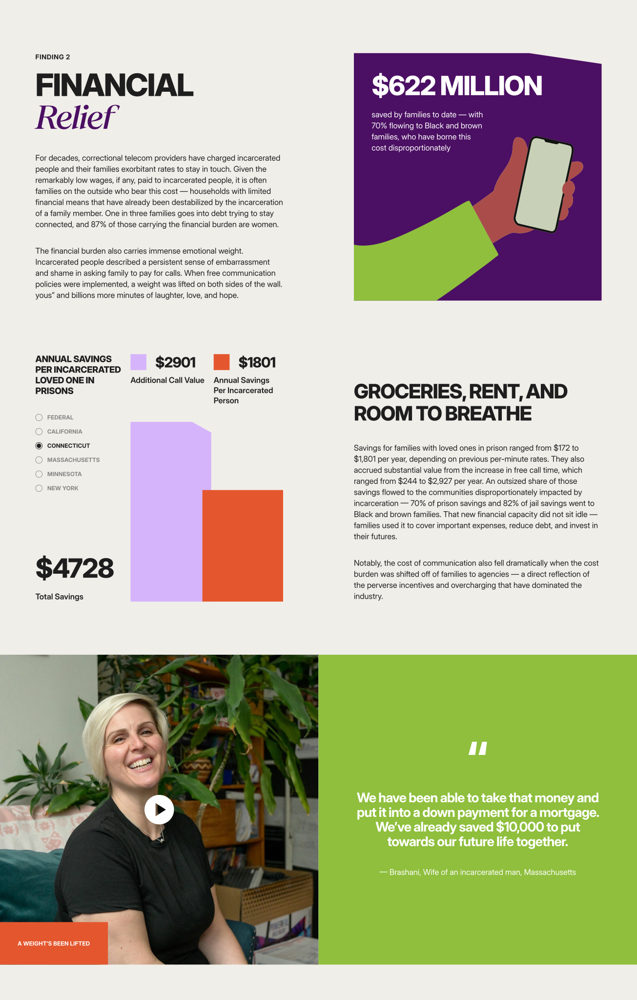

Michael
Formerly incarcerated, New York
To have free calls now — it’s more than what I think people realize. It’s our lifeline to the world. Our lifeline to our families.
Testimonials

Michael
Formerly incarcerated, New York
To have free calls now — it’s more than what I think people realize. It’s our lifeline to the world. Our lifeline to our families.

Saul
Currently incarcerated, California
Today, I talk to my mom every day. I call her like three times a day. I read to her, because it’s hard for her to read. And we pray together.
Felix
Prison counselor, New York
As a counselor, I give them as much support as I possibly can. But I’m not their family. I’m not their friend. They still have a guard up against me. Being able to talk to their family, they’re able to get guidance that they wouldn’t really want to take from me.
Angel
Wife, California
My husband has a daughter. She’s 11 years old, and she is autistic. Not being able to call every single day, his calls with her would be sporadic. But now they talk every day. They’re able to spend an hour on the phone each night. He reads to her, and she’ll read to him. She is being so vocal since she’s been able to speak to her dad.

Tricia
Sister, Federal
He doesn’t like burdening people. So, I remember the first [free] phone call, him being so excited like, ‘okay, now we can talk about anything you want, and when we hang up, I can just call you back.’

Sgt. Mitchell
Corrections sergeant, New York
Their interactions with [officers] become more positive and constructive instead of negative. They have things to look forward to. They go back to their cells, get on the phone, speak to their friends and loved ones, talk about their day, and get advice and counseling over those phone calls.

Shelene
Mother, Minnesota
I don’t have the same resentments towards just communicating with him, which had nothing to do with communicating with him, but the fact that they’re taking my money and they’re robbing me was the feeling, just so that I can speak to my son. I don’t feel any of those things anymore, and it’s a far cry different.
Marc
Formerly incarcerated, New York
I got to sit on the phone and do homework with my daughter, which was huge — just kind of sit there and allow her time to think through the problems and not worry about it costing per minute.

Jasmeel
Currently incarcerated, California
These conversations create a pathway for empathy and healing and just a healthy relationship with my family and actually just hope for a future when I get out, knowing that I have people that I can go to. Without these [free] phone calls, that would not have been possible.

Dwayne
Currently incarcerated, Connecticut
I [hadn’t] heard from my daughter in over 10 years when I got a letter with a phone number. [Then] when I heard her voice, it killed me. I told her I love her, and that I’m going to keep in contact with her. I talk to her every day.

Nia
Wife, Massachusetts
When the calls became free, it wasn’t just a relief for me. It meant that my son could talk to his dad without me worrying about how much it was costing or how many minutes were left. That changed everything for us.

Ransey
Daughter, New York
The time on the phone is like church.



How free communication in prisons and jails is transforming lives, strengthening families, and reshaping reentry. A necessary, achievable, and transformative lifeline.
Correctional telecom is a $1.5 billion industry built on charging incarcerated people and their families exorbitant rates to stay connected. When families can't afford to call, communication gets rationed — conversations cut short, contact limited to urgent matters, relationships fracture or never form. That isolation doesn't stay inside the walls. It weakens the ties that matter most to rehabilitation, reentry, and public safety.
The national Connecting Families campaign is making communication in prisons and jails entirely free across the country. This report is the first to document the results — and the evidence is clear: when the cost barrier is removed, connection increases, relationships strengthen, and families are better able to navigate incarceration together toward a promising free future that makes us all safer.
“To have free calls now — it’s more than what I think people realize. It’s our lifeline to the world. Our lifeline to our families.”
Michael
“Today, I talk to my mom every day. I call her like three times a day. I read to her, because it’s hard for her to read. And we pray together.”
Saul
“As a counselor, I give them as much support as I possibly can. But I’m not their family. I’m not their friend. They still have a guard up against me. Being able to talk to their family, they’re able to get guidance that they wouldn’t really want to take from me.”
Felix
“My husband has a daughter. She’s 11 years old, and she is autistic. Not being able to call every single day, his calls with her would be sporadic. But now they talk every day. They’re able to spend an hour on the phone each night. He reads to her, and she’ll read to him. She is being so vocal since she’s been able to speak to her dad.”
Angel
“He doesn’t like burdening people. So, I remember the first [free] phone call, him being so excited like, ‘okay, now we can talk about anything you want, and when we hang up, I can just call you back.’”
Tricia
“Their interactions with [officers] become more positive and constructive instead of negative. They have things to look forward to. They go back to their cells, get on the phone, speak to their friends and loved ones, talk about their day, and get advice and counseling over those phone calls.”
Sgt. Mitchell
“I got to sit on the phone and do homework with my daughter, which was huge — just kind of sit there and allow her time to think through the problems and not worry about it costing per minute.”
Marc
“I don’t have the same resentments towards just communicating with him, which had nothing to do with communicating with him, but the fact that they’re taking my money and they’re robbing me was the feeling, just so that I can speak to my son. I don’t feel any of those things anymore, and it’s a far cry different.”
Shelene
“I [hadn’t] heard from my daughter in over 10 years when I got a letter with a phone number. [Then] when I heard her voice, it killed me. I told her I love her, and that I’m going to keep in contact with her. I talk to her every day.”
Dwayne
“When the calls became free, it wasn’t just a relief for me. It meant that my son could talk to his dad without me worrying about how much it was costing or how many minutes were left. That changed everything for us.”
Nia
“These conversations create a pathway for empathy and healing and just a healthy relationship with my family and actually just hope for a future when I get out, knowing that I have people that I can go to. Without these [free] phone calls, that would not have been possible.”
Jasmeel
“The time on the phone is like church.”
Ransey


 0.0 BILLION
0.0 BILLION

 $0 MIL
$0 MIL


 0%
0%


The evidence is clear — and it demands action. Here's how you can help make free communication in prisons and jails the standard everywhere.
Download the full report and share it with anyone who needs to see what's possible — and what is actively being withheld where these policies haven't yet been adopted.
Free prison and jails communication is advancing state by state and county by county. Tell your elected officials it's time to act.
Worth Rises is working to end the correctional telecom industry's exploitation of incarcerated people and their families. Support our work.
Two-pager covering the eight areas of measurable impact.
A practical guide for agencies, legislators, and advocates designing, procuring, and rolling out free communication in prisons and jails.
A guide for advocates, organizers, and campaigns working to win free communication in their community.